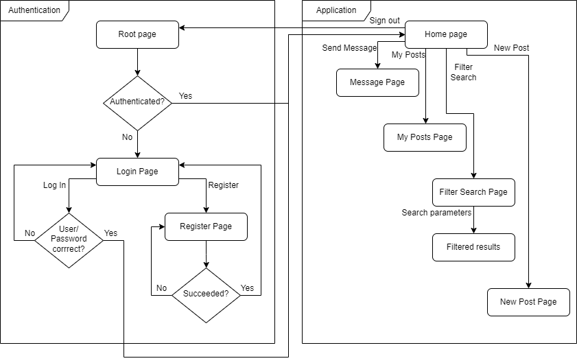
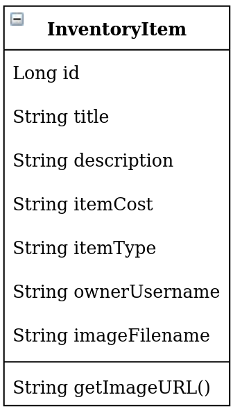
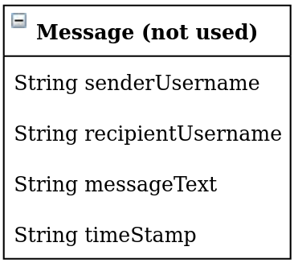

Project Layout
Flow chart

Illustrated above is a flow chart of the application layout. Each page is represented by a box and actions/conditions are represented by arrows.
Models
User

The User model is mostly the same as in Project 1, but a new field has been added to store email addresses.
InventoryItem

The InventoryItem stores information on each item a user wishes to sell.
We implemented title, description, and owner_username first, as those fields are critical information used to describe the item and who owns it.
Next, we implemented additional fields such as itemCost (to store price information) and itemType (for sorting by category later).
Lastly, image upload capability was added, and the image filename is stored in the imageFilename field.
A helper function getImageURL takes our AWS S3 endpoint URL and concatenates imageFilename to get the path to the image file, which is shown in HTML views.
Message

This model was ultimitely not implemented, but would have been used to store messages in a sort of “chatroom”. We decided to use email instead.